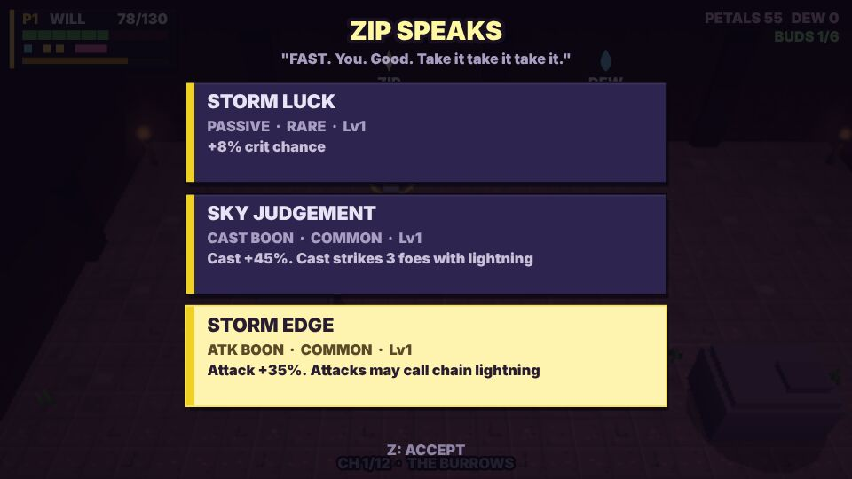
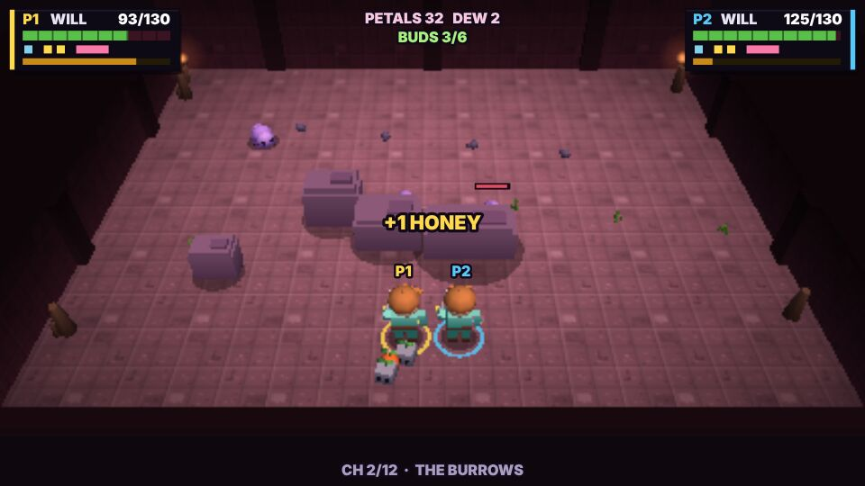
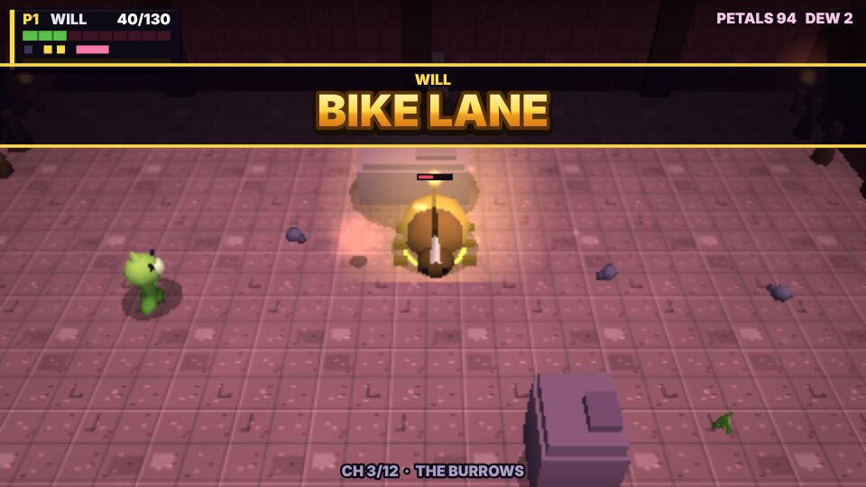
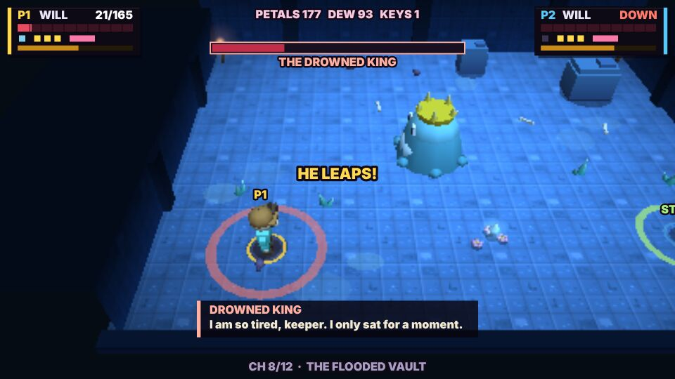
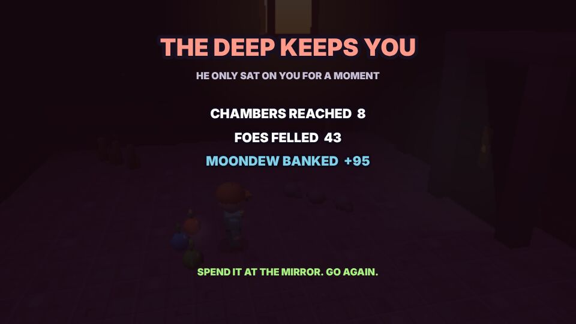

<title>Hard Mode: Rootdeep 64</title>
<meta name="claude:viewport-fit-sides" content="cover">
<meta name="description" content="Vex&#x27;s expert review of Rootdeep 64">
<link rel="preconnect" href="https://fonts.googleapis.com"><link rel="preconnect" href="https://fonts.gstatic.com" crossorigin>
<link rel="stylesheet" href="https://fonts.googleapis.com/css2?family=Russo+One&family=IBM+Plex+Sans+Condensed:ital,wght@0,400;0,600;0,700;1,400&family=IBM+Plex+Mono:wght@500&display=swap">
<style>
*,*::before,*::after{box-sizing:border-box}
img{display:block;max-width:100%;height:auto}
.shot{margin:0}
.wrap{max-width:1080px;margin:0 auto;padding-left:max(16px,env(safe-area-inset-left,0px));padding-right:max(16px,env(safe-area-inset-right,0px))}
h1,h2,h3{text-wrap:balance}
:focus-visible{outline:3px solid currentColor;outline-offset:2px}

:root{--bg:#12101c;--panel:#1c1930;--ink:#ece8ff;--mute:#a49dc4;--acid:#b4f03c;--hot:#ff4fa3;--line:#352f55;color-scheme:dark}
body{background:var(--bg);color:var(--ink);font:17px/1.6 "IBM Plex Sans Condensed",system-ui,sans-serif}
.mast{border-bottom:2px solid var(--line);background:linear-gradient(90deg,#1a1430,#12101c)}
.mast .wrap{display:flex;flex-wrap:wrap;align-items:center;justify-content:space-between;gap:6px 18px;padding-block:14px}
.logo{font:400 clamp(28px,5.5vw,48px)/1 "Russo One",sans-serif;letter-spacing:.06em;color:var(--acid)}
.logo b{color:var(--hot);font-weight:400}
.mast span:last-child{font:500 12px "IBM Plex Mono",monospace;letter-spacing:.1em;color:var(--mute);text-transform:uppercase}
.hero{padding-block:34px 10px}
.tag{font:500 12px "IBM Plex Mono",monospace;letter-spacing:.14em;color:var(--hot);text-transform:uppercase}
.hero h1{font:400 clamp(54px,11vw,128px)/.9 "Russo One",sans-serif;margin:8px 0 12px;letter-spacing:.01em;
 background:linear-gradient(180deg,var(--ink) 55%,var(--acid));-webkit-background-clip:text;background-clip:text;color:transparent}
.hero h2{font:700 clamp(20px,3vw,30px)/1.2 "IBM Plex Sans Condensed",sans-serif;margin:0 0 10px;color:var(--acid)}
.hero .dk{max-width:64ch;color:var(--mute);font-style:italic;margin:0 0 6px}
.hero .by{font:500 13px "IBM Plex Mono",monospace;letter-spacing:.1em;margin:14px 0 0;color:var(--ink)}
.grid{display:grid;grid-template-columns:minmax(0,1fr) 330px;gap:44px;align-items:start;padding-block:24px 44px}
.body p{margin:0 0 1em;max-width:68ch}
.body h3{font:400 24px/1.15 "Russo One",sans-serif;color:var(--hot);margin:30px 0 10px;letter-spacing:.02em}
.shot{margin:24px 0;border:2px solid var(--line);background:var(--panel)}
.shot figcaption{font:500 13px/1.4 "IBM Plex Mono",monospace;color:var(--mute);padding:10px 12px}
.shot figcaption::before{content:"▶ ";color:var(--acid)}
.pull{margin:30px 0;padding:6px 0 6px 22px;border-left:6px solid var(--acid);font:400 clamp(22px,3.2vw,32px)/1.25 "Russo One",sans-serif}
.side{display:flex;flex-direction:column;gap:22px;position:sticky;top:16px}
.rate{background:var(--panel);border:2px solid var(--line)}
.rate h3{margin:0;padding:12px 16px;font:400 18px "Russo One",sans-serif;letter-spacing:.08em;border-bottom:2px solid var(--line);color:var(--acid)}
.rr{display:grid;grid-template-columns:1fr auto;gap:2px 10px;padding:12px 16px;border-bottom:1px solid var(--line)}
.rr b{font:700 15px "IBM Plex Sans Condensed",sans-serif;letter-spacing:.08em;text-transform:uppercase}
.rr .v{font:400 20px "Russo One",sans-serif;text-align:right}
.rr .lns{grid-column:1/-1}.rr p{grid-column:1/-1;margin:0;font-size:13.5px;color:var(--mute);line-height:1.4}
.ln{display:inline-block;width:16px;height:22px;margin-right:5px;border-radius:5px 5px 3px 3px;background:var(--line);position:relative}
.ln.f{background:var(--acid);box-shadow:0 0 10px #b4f03c88}.ln.h{background:linear-gradient(90deg,var(--acid) 50%,var(--line) 50%)}
.ln::before{content:"";position:absolute;left:4px;right:4px;top:-4px;height:4px;border-radius:2px 2px 0 0;background:inherit}
.ov{display:flex;justify-content:space-between;align-items:center;padding:14px 16px;background:var(--hot);color:#12101c}
.ov b{font:400 16px "Russo One",sans-serif;letter-spacing:.08em}.ov big{font:400 34px "Russo One",sans-serif}
.tips{background:#0c1a06;border:2px solid var(--acid);padding:16px 18px 6px}
.tips h3{margin:0 0 8px;font:400 22px "Russo One",sans-serif;color:var(--acid);letter-spacing:.04em}
.tips ul{margin:0;padding-left:18px;font-size:15px}.tips li{margin-bottom:10px}
.pc{background:var(--panel);border:2px solid var(--line);padding:14px 16px}
.pc h4{margin:0 0 6px;font:400 16px "Russo One",sans-serif;letter-spacing:.08em}.pc h4.p{color:var(--acid)}.pc h4.c{color:var(--hot)}
.pc ul{margin:0 0 12px;padding-left:18px;font-size:14.5px;line-height:1.45}.pc li{margin-bottom:5px}
.errata{border:2px dashed var(--mute);padding:12px 16px;font-size:14.5px}
.errata h4{margin:0 0 4px;font:400 16px "Russo One",sans-serif;letter-spacing:.08em}.errata .eh{margin:0 0 6px;color:var(--mute)}.errata ul{margin:0;padding-left:18px}
footer{border-top:2px solid var(--line);color:var(--mute);font-size:13px}footer .wrap{padding-block:16px}
code{font:500 .9em "IBM Plex Mono",monospace}
@media (max-width:900px){.grid{grid-template-columns:1fr}.side{position:static}}

</style>
<header class="mast"><div class="wrap"><span class="logo">HARD<b>/</b>MODE</span><span>For players who finished it twice</span></div></header>
<main class="wrap">
<section class="hero"><span class="tag">Review · Action roguelite · 1-4 players</span>
<h1>Rootdeep 64</h1><h2>The Deep Keeps You. Then It Keeps You Again. And Again.</h2>
<p class="dk">Rootdeep 64 dresses itself up like an N64 cartridge. Underneath is a Hades-style boon roguelite with a tight dash and some real charm. The solo game is a brick wall, and the second controller tears it down. VEX dug in for an hour and came back with mud under the nails.</p>
<p class="by">BY VEX · 32 HEAT IN HADES · ISAAC · DEAD CELLS · SPELUNKY</p></section>
<div class="grid"><article class="body">
<p>Here's what happened, in order. I died in chamber 3. Then chamber 3 again, and four more times after that. Six honest solo runs as Will the Keeper, and none of them got past the first act's third room. The chamber counter says <strong>CH 3/12</strong> like it's mocking me. I have 32 Heat on the board in Hades. I'm not new here.</p>

<p>Then I found out that pressing <strong>Comma</strong> in the hub spawns a second Will on the <em>same keyboard</em>. That's Player 2, on arrows and Comma/Period/M/N/Right-Shift. The game tells you none of that, and I found every one of those keys by mashing. With two Wills under my two hands I killed the Grub Mother on my first try. On the next run I got the Drowned King to under 10% before the deep "sat on me." Same player, same skill. My clear rate went from zero to two bosses. That's the review in a nutshell. There's a good game in here, and the knobs that set how hard it is are turned the wrong way.</p>

<figure class="shot "><figcaption>A RARE Storm Luck (+8% crit) next to a COMMON Storm Edge (+35% attack).</figcaption></figure>
<h3>What it gets right</h3>

<p>The <strong>hub</strong> is great. It's a warm, crowded little hollow full of NPCs who talk like people. Erin trades you a Pressed Flower keepsake for a single jar of honey. Marcus bets you can't reach chamber 5. Ranger has field notes. The Board turns all of it into 22 errands. Death screens are funny. When the Drowned King flattens you, the subtitle reads "HE ONLY SAT ON YOU FOR A MOMENT." I laughed out loud at a game that had just killed me.</p>

<figure class="shot "><figcaption>Two Wills, one player. Same keyboard, Comma to join.</figcaption></figure>
<p>Moment to moment, <strong>combat</strong> feels good. Dash is crisp. The heavy (hold attack, "Sneaker Kick") lands for about 48, and with a Thorn Edge boon it hits 72. The super is a bike charge that crits for 136. Boons come from named patrons behind labeled doors (Leaf, Zip, Dew, Lucky), and the picks read cleanly: rarity, level and a one-line effect. "The whole party shares it" is a smart touch. The <strong>Drowned King</strong> is the best fight in the game. "HE LEAPS!" puts a red ring on the floor, you dash, he whiffs. It's fair, it reads, and you can learn it. Mirror upgrades like Death Defiance actually save runs. It saved mine at 21 HP.</p>

<p>The <strong>look</strong> is lovely. Chunky voxel rooms, warm torchlight, a blue-glass Flooded Vault, and a camera with a slight tilt. It earns the "64" in the name.</p>

<figure class="shot "><figcaption>BIKE LANE. When it connects, it crits for 136.</figcaption></figure>
<h3>What doesn't</h3>

<p><strong>The solo curve is broken.</strong> Ordinary enemies do brutal contact damage. I watched one beetle exchange take me from 60 to 17. Grubs chip about 10 per touch. And you don't get the tools to fight back. My first <strong>boon</strong> showed up on run 3. Before that, chamber 1 handed me a "bud" companion, a sprout, or a lore Echo. Hades puts a god in your face in room one for a reason. Here you're stuck with a 14-damage light combo for two or three rooms while the room spawns a second wave ("THE DEEP STIRS — MORE RISE").</p>

<figure class="shot "><figcaption>"HE LEAPS!" Dash out of the red ring, punish the landing.</figcaption></figure>
<p><strong>Sprout turrets</strong> are where solo runs go to die. They sit back and shoot, and when you close in they <em>relocate</em> across the room. With no boons, chasing one through a second wave is a coin flip. The <strong>cast</strong> ("Mazel Tov Laser") should be the answer. It fires on eight fixed directions, though, and the camera is tilted, so a turret at an odd angle just can't be hit. I wasted whole volleys watching the beam sail past.</p>

<p><strong>Readability</strong> is shaky. Pillars and effects hide your character completely, and often all that's left is the gold ring under your feet. Boss dialogue boxes sit <em>on the playfield</em> and cover your Keeper mid-fight. Damage numbers, "SELFIE!", "LEAF SCATTERED!" and "SUPER READY!" pile on top of each other. The god called <strong>Dew</strong> shares a name with the currency the HUD labels <strong>DEW</strong> (Moondew). Doors lie, too: a "PETALS" door and a "LUCKY" door each dropped me into a shop stall first. Rarity can be backwards. A RARE Storm Luck (+8% crit) sat next to a COMMON Storm Edge (+35% attack).</p>

<p><strong>The meta economy is lopsided.</strong> Solo deaths paid 0–8 Moondew. Mirror ranks cost 8–60, and Death Defiance alone is 60. One boss kill paid 40, and my chamber-8 co-op run banked 95. So the only fast way to get strong is the co-op-with-yourself trick. On top of that, the second Will doesn't seem to scale the rooms, and revives look unlimited. Two keyboards' worth of hands gives you two health bars, two supers and free resurrections. It's degenerate, and it's also the most fun I had.</p>

<p>Odds and ends: Settings has music, SFX and screen shake, but <strong>no key rebinding</strong> and no assist options. Errands don't count until you go talk to the NPC, and after a chamber-8 run my Board read 1/22. <strong>Sound:</strong> our review build ran headless and I heard nothing, so I can't score it.</p>

<h3>The verdict</h3>

<p>Rootdeep 64 has the bones: a great hub, crunchy hits, smart boss telegraphs and plenty of personality. Played alone, it starves you of boons for three rooms, throws teleporting turrets at a melee kit, and pays you crumbs for losing. Push boons earlier, tone down contact damage, make cast aim freely, put the P2 controls on screen, and this jumps a full point. Right now it's a co-op game pretending to be a solo one.</p>
<blockquote class="pull">With two Wills under my two hands I killed the Grub Mother on my first try. Same player, same skill. My clear rate went from zero to two bosses.</blockquote>
</article>
<aside class="side">
<div class="rate"><h3>THE RATINGS</h3>
<div class="rr"><b>Graphics</b><span class="v">4.0</span><span class="lns"><i class="ln f"></i><i class="ln f"></i><i class="ln f"></i><i class="ln f"></i><i class="ln e"></i></span><p>Voxel N64 charm, gorgeous rooms; occlusion and HUD clutter hurt</p></div>
<div class="rr"><b>Sound</b><span class="v">N/A</span><p>Headless build, nothing heard. Not scored</p></div>
<div class="rr"><b>Control</b><span class="v">3.0</span><span class="lns"><i class="ln f"></i><i class="ln f"></i><i class="ln f"></i><i class="ln e"></i><i class="ln e"></i></span><p>Dash and heavy feel great; 8-way cast and hidden P2 binds don't</p></div>
<div class="rr"><b>FunFactor</b><span class="v">3.0</span><span class="lns"><i class="ln f"></i><i class="ln f"></i><i class="ln f"></i><i class="ln e"></i><i class="ln e"></i></span><p>Brilliant hub, fair bosses, a solo wall at chamber 3</p></div>
<div class="ov"><b>OVERALL</b><big>3.0 / 5.0</big></div></div>
<div class="tips"><h3>HARD TIPS from Vex</h3><ul><li><strong>Hold Z.</strong> The Sneaker Kick heavy does ~48 against ~14 for a light tap. Light combos are for finishing.</li><li><strong>Don't chase turrets.</strong> They relocate when you close in. Clear the melee foes first, then pin a turret against a wall with a dash.</li><li><strong>Cast on the diagonals only when the target is lined up.</strong> The laser snaps to eight directions.</li><li><strong>Buy Golden Touch early.</strong> It's 8 Moondew. Petals turn into shop heals and honey, and honey gets you Erin's Pressed Flower (+20 max HP, heal after a boss).</li><li><strong>Death Defiance (60 Moondew) is the first big buy.</strong> It turns a lost boss into a won one.</li><li><strong>Press Comma in the hub.</strong> Player 2 lives on the arrow keys. Comma attacks, Period casts, M is special, N is super, Right Shift dashes. The game won't tell you.</li><li><strong>Drowned King:</strong> when you see "HE LEAPS!", dash out of the red ring, then punish the landing.</li></ul></div>
<figure class="shot"><figcaption>"He only sat on you for a moment." Vex laughed at a game that had just killed them.</figcaption></figure>
<div class="pc"><h4 class="p">PROS</h4><ul><li>Charming hub and NPC writing; death screens with jokes that land</li><li>Crunchy dash, heavy and super; boon cards are clear and readable</li><li>Drowned King's telegraphed leap is genuinely fair, learnable design</li><li>Strong voxel art direction, two distinct biomes in the first hour</li><li>Mirror upgrades (Death Defiance, Golden Touch) feel meaningful</li></ul><h4 class="c">CONS</h4><ul><li>Solo difficulty wall at chambers 2–3; boons arrive far too late</li><li>Teleporting turrets plus an 8-way-only cast make for miserable fights</li><li>Same-keyboard Player 2 trivializes the game, and its keys are undocumented</li><li>Character hidden by scenery and dialogue boxes; effect text clutter</li><li>Moondew trickles on early deaths; naming clashes (Dew/DEW); doors that mislabel</li></ul></div>
<aside class="errata"><h4>Errata</h4><p class="eh">Vex read the game's code after filing this review. These claims did not hold up:</p><ul><li>Co-op scaling does exist: each extra keeper adds foes to every chamber and +75% boss health. The unlimited revives just outweigh it.</li><li>Sprout turrets don't teleport. They back away (kite) when you close in.</li><li>Doors don't mislabel. Solo doors fire the moment you touch one, so Vex was brushing the neighbouring door.</li><li>Nothing took HP in the shop. Errand progress also counts things done before you accept; the Board just hides the names until you ask.</li></ul></aside>
</aside></div></main>
<footer><div class="wrap">Hard/Mode is a made-up magazine for this playtest. Vex is a reviewer persona who played the real build, blind, for about 55 minutes on a simulated keyboard. Sound wasn't heard.</div></footer>
